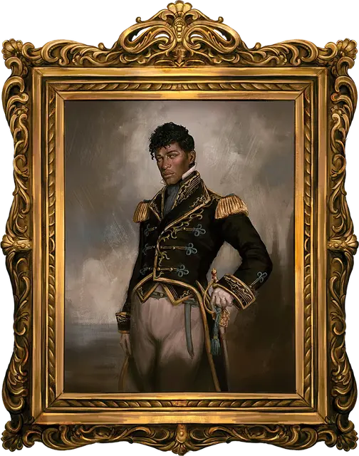

Портрет Константори
Constantori's Portrait
Чудесный предмет, очень редкий (требуется настройка)

Рекомендованная стоимость 5 001-50 000 зм
На картине знаменитого художника Дкези Квана изображен Константори — прекрасный придворный, которому заплатили баснословные деньги, дабы он согласился позировать. Люди до сих пор спорят, действительно ли внешность Константори соответствует той, что на холсте. Этот портрет является одной из нескольких картин, написанных по заказу покойной Даяни Гристорн — криминального авторитета, которая часто дарила подобные произведения своим самым уважаемым соратникам.
Разум. Портрет Константори -это разумный предмет, законно-злого мировоззрения с Интеллектом 14, Мудростью 12 и Харизмой 8. Он может слышать в радиусе 120 футов и обладает темным зрением на расстоянии 60 футов, но не может видеть ничего позади себя.
Портрет может разговаривать на Общем, Драконьем и Эльфийском языках, как если бы это был живой человек, хотя рот Константори не двигается. Всякий раз, когда разговор происходит в пределах области слуха портрета, то он охотно собирает секреты, имена таинственных рассказчиков, важные события или любые политические беседы.
Индивидуальность. Портрет Константори требователен, снисходителен и тщеславен. Он не любит, когда его закрывают или убирают с глаз долой, и громко осуждает любого, кто пытается вытащить его из позолоченной рамы.
Изобилие информации. Основная задача картины — наблюдать, а затем вспоминать разговоры. За последние несколько десятилетий Портрет Константори незаметно подслушивал бесчисленные беседы и теперь обладает невероятным количеством информации: от преступных заговоров до тайных паролей. Мастер решает, что именно известно картине, а что нет.
Пока вы настроены на эту картину, вы можете действием телепатически связаться с ней на любом расстоянии при условии, что вы и картина находитесь на одном плане существования. Однако картина не может телепатически связаться с вами. Для поддержания телепатического контакта с картиной требуется ваша концентрация (как при концентрации на заклинании).
Охранный портрет. Пока вы настроены на портрет, вы можете приказать ему охранять свое местоположение от одного или нескольких существ, которых вы обозначите врагами. Портрет будет защищать это место до тех пор, пока вы не прикажете ему прекратить или пока не закончится ваша настройка на картину.
Портрет имеет 3 заряда. Если существо, определенное как враг, начинает свой ход в его зоне видимости, он тратит 1 заряд на заклинание волшебная стрела [magic missile] (3 стрелы), нацеленное на это существо. Картина восстанавливает все потраченные заряды на рассвете.
Портрет представляет собой Маленький предмет с КД 12 и 20 хитами, а также обладает иммунитетом к урону от яда. Пока портрет находится в позолоченной раме, он весит 15 фунтов. Если у портрета остается хотя бы 1 хит и на него накладывается заговор починка [mending], он восстанавливает 2к6 хитов.